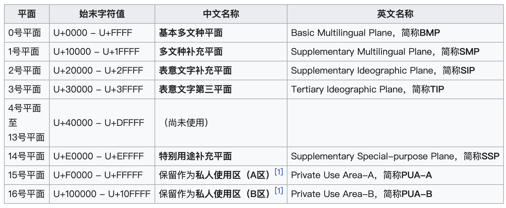
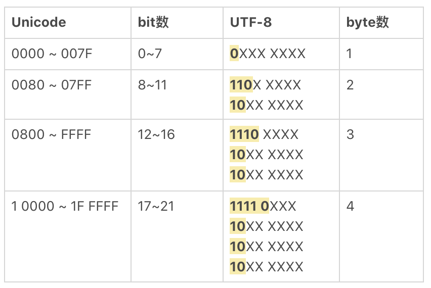
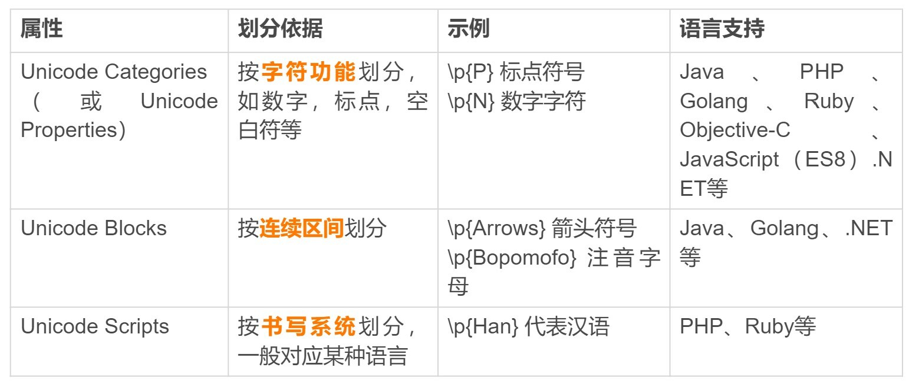
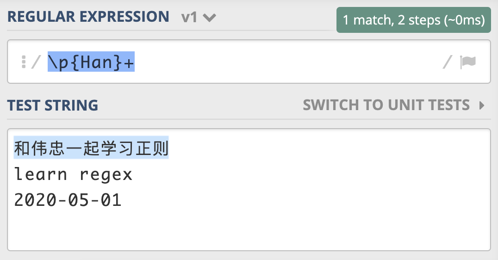
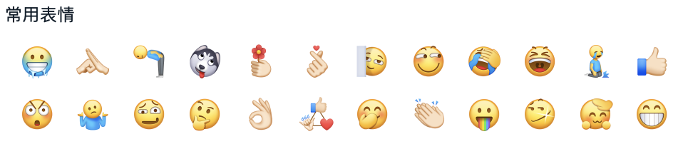
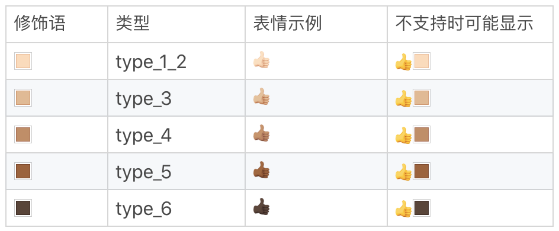
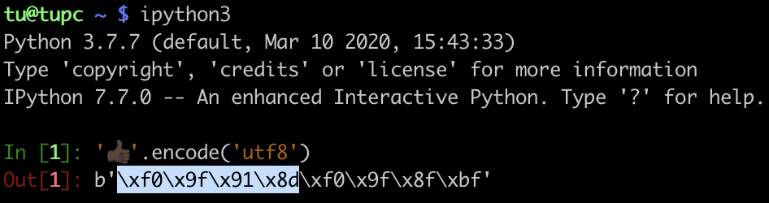
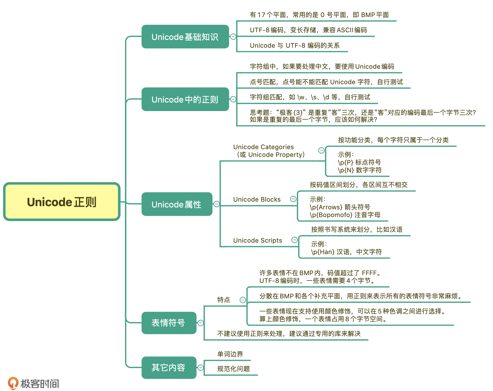

- 00 导读 余晟：我是怎么学习和使用正则的？.md.html
- 00 开篇词丨学习正则，我们到底要学什么？.md.html
- 01 元字符：如何巧妙记忆正则表达式的基本元件？.md.html
- 02丨量词与贪婪：小小的正则，也可能把CPU拖垮！.md.html
- 03 分组与引用：如何用正则实现更复杂的查找和替换操作？.md.html
- 04 匹配模式：一次性掌握正则中常见的4种匹配模式.md.html
- 05 断言：如何用断言更好地实现替换重复出现的单词？.md.html
- 06 转义：正则中转义需要注意哪些问题？.md.html
- 07 正则有哪些常见的流派及其特性？.md.html
- 08 应用1：正则如何处理 Unicode 编码的文本？.md.html
- 09 应用2：如何在编辑器中使用正则完成工作？.md.html
- 10 应用3：如何在语言中用正则让文本处理能力上一个台阶？.md.html
- 11 如何理解正则的匹配原理以及优化原则？.md.html
- 12 问题集锦：详解正则常见问题及解决方案.md.html
- 加餐 从编程语言的角度来理解正则表达式.md.html
- 结束语 使用正则提高你的人生效率.md.html
- 捐赠
08 应用1：正则如何处理 Unicode 编码的文本？
你好，我是伟忠。这一节我们来学习，如何使用正则来处理Unicode编码的文本。如果你需要使用正则处理中文，可以好好了解一下这些内容。
不过，在讲解正则之前，我会先给你讲解一些基础知识。只有搞懂了基础知识，我们才能更好地理解今天的内容。一起来看看吧！
Unicode基础知识
Unicode（中文：万国码、国际码、统一码、单一码）是计算机科学领域里的一项业界标准。它对世界上大部分的文字进行了整理、编码。Unicode使计算机呈现和处理文字变得简单。
Unicode至今仍在不断增修，每个新版本都加入更多新的字符。目前Unicode最新的版本为 2020 年3月10日公布的13.0.0，已经收录超过 14 万个字符。
现在的Unicode字符分为17组编排，每组为一个平面（Plane），而每个平面拥有 65536（即2的16次方）个码值（Code Point）。然而，目前Unicode只用了少数平面，我们用到的绝大多数字符都属于第0号平面，即BMP平面。除了BMP 平面之外，其它的平面都被称为补充平面。
关于各个平面的介绍我在下面给你列了一个表，你可以看一下。

Unicode标准也在不断发展和完善。目前，使用4个字节的编码表示一个字符，就可以表示出全世界所有的字符。那么Unicode在计算机中如何存储和传输的呢？这就涉及编码的知识了。
Unicode相当于规定了字符对应的码值，这个码值得编码成字节的形式去传输和存储。最常见的编码方式是UTF-8，另外还有UTF-16，UTF-32 等。UTF-8 之所以能够流行起来，是因为其编码比较巧妙，采用的是变长的方法。也就是一个Unicode字符，在使用UTF-8编码表示时占用1到4个字节不等。最重要的是Unicode兼容ASCII编码，在表示纯英文时，并不会占用更多存储空间。而汉字呢，在UTF-8中，通常是用三个字节来表示。
>>> u'正'.encode('utf-8')
b'\xe6\xad\xa3'
>>> u'则'.encode('utf-8')
b'\xe5\x88\x99'
下面是 Unicode 和 UTF-8 的转换规则，你可以参考一下。

Unicode中的正则
在你大概了解了Unicode的基础知识后，接下来我来给你讲讲，在用Unicode中可能会遇到的坑，以及其中的点号匹配和字符组匹配的问题。
编码问题的坑
如果你在编程语言中使用正则，编码问题可能会让正则的匹配行为很奇怪。先说结论，在使用时一定尽可能地使用Unicode编码。
如果你需要在Python语言中使用正则，我建议你使用Python3。如果你不得不使用Python2，一定要记得使用 Unicode 编码。在Python2中，一般是以u开头来表示Unicode。如果不加u，会导致匹配出现问题。比如我们在“极客”这个文本中查找“时间”。你可能会很惊讶，竟然能匹配到内容。
下面是Python语言示例：
# 测试环境 macOS/Linux/Windows， Python2.7
>>> import re
>>> re.search(r'[时间]', '极客') is not None
True
>>> re.findall(r'[时间]', '极客')
['\xe6']
# Windows下输出是 ['\xbc']
通过分析原因，我们可以发现，不使用Unicode编码时，正则会被编译成其它编码表示形式。比如，在macOS或Linux下，一般会编码成UTF-8，而在Windows下一般会编码成GBK。
下面是我在macOS上做的测试，“时间”这两个汉字表示成了UTF-8编码，正则不知道要每三个字节看成一组，而是把它们当成了6个单字符。
# 测试环境 macOS/Linux，Python 2.7
>>> import re
>>> re.compile(r'[时间]', re.DEBUG)
in
literal 230
literal 151
literal 182
literal 233
literal 151
literal 180
<_sre.SRE_Pattern object at 0x1053e09f0>
>>> re.compile(ur'[时间]', re.DEBUG)
in
literal 26102
literal 38388
<_sre.SRE_Pattern object at 0x1053f8710>
我们再看一下 “极客” 和 “时间” 这两个词语对应的UTF-8编码。你可以发现，这两个词语都含有 16进制表示的e6，而GBK编码时都含有16进制的bc，所以才会出现前面的表现。
下面是查看文本编码成UTF-8或GBK方式，以及编码的结果：
# UTF-8
>>> u'极客'.encode('utf-8')
'\xe6\x9e\x81\xe5\xae\xa2' # 含有 e6
>>> u'时间'.encode('utf-8')
'\xe6\x97\xb6\xe9\x97\xb4' # 含有 e6
# GBK
>>> u'极客'.encode('gbk')
'\xbc\xab\xbf\xcd' # 含有 bc
>>> u'时间'.encode('gbk')
'\xca\xb1\xbc\xe4' # 含有 bc
这也是前面我们花时间讲编码基础知识的原因，只有理解了编码的知识，你才能明白这些。在学习其它知识的时候也是一样的思路，不要去死记硬背，搞懂了底层原理，你自然就掌握了。因此在使用时，一定要指定 Unicode 编码，这样就可以正常工作了。
# Python2 或 Python3 都可以
>>> import re
>>> re.search(ur'[时间]', u'极客') is not None
False
>>> re.findall(ur'[时间]', u'极客')
[]
点号匹配
之前我们学过，点号可以匹配除了换行符以外的任何字符，但之前我们接触的大多是单字节字符。在Unicode中，点号可以匹配上Unicode字符么？这个其实情况比较复杂，不同语言支持的也不太一样，具体的可以通过测试来得到答案。
下面我给出了在Python和JavaScript测试的结果：
# Python 2.7
>>> import re
>>> re.findall(r'^.$', '学')
[]
>>> re.findall(r'^.$', u'学')
[u'\u5b66']
>>> re.findall(ur'^.$', u'学')
[u'\u5b66']
# Python 3.7
>>> import re
>>> re.findall(r'^.$', '学')
['学']
>>> re.findall(r'(?a)^.$', '学')
['学']
/* JavaScript(ES6) 环境 */
> /^.$/.test("学")
true
至于其它的语言里面能不能用，你可以自己测试一下。在这个课程里，我更多地是希望你掌握这些学习的方法和思路，而不是单纯地记住某个知识点，一旦掌握了方法，之后就会简单多了。
字符组匹配
之前我们学习了很多字符组，比如\d表示数字，\w表示大小写字母、下划线、数字，\s表示空白符号等，那 Unicode 下的数字，比如全角的1、2、３等，算不算数字呢？全角的空格算不算空白呢？同样，你可以用我刚刚说的方法，来测试一下你所用的语言对这些字符组的支持程度。
Unicode 属性
在正则中使用Unicode，还可能会用到Unicode的一些属性。这些属性把Unicode字符集划分成不同的字符小集合。
在正则中常用的有三种，分别是按功能划分的Unicode Categories（有的也叫 Unicode Property），比如标点符号，数字符号；按连续区间划分的Unicode Blocks，比如只是中日韩字符；按书写系统划分的Unicode Scripts，比如汉语中文字符。

在正则中如何使用这些Unicode属性呢？在正则中，这三种属性在正则中的表示方式都是\p{属性}。比如，我们可以使用 Unicode Script 来实现查找连续出现的中文。

你可以在这里进行测试。
其中，Unicode Blocks在不同的语言中记法有差异，比如Java需要加上In前缀，类似于 \p{InBopomofo**} 表示注音字符。
知道Unicode属性这些知识，基本上就够用了，在用到相关属性的时候，可以再查阅一下参考手册。如果你想知道Unicode属性更全面的介绍，可以看一下维基百科的对应链接。
表情符号
表情符号其实是“图片字符”，最初与日本的手机使用有关，在日文中叫“绘文字”，在英文中叫emoji，但现在从日本流行到了世界各地。不少同学在聊天的时候喜欢使用表情。下面是办公软件钉钉中一些表情的截图。

在2020 年 3 月 10 日公布的Unicode标准 13.0.0 中，新增了55个新的emoji表情，完整的表情列表你可以在这里查看这个链接。
这些表情符号有如下特点。
- 许多表情不在BMP内，码值超过了 FFFF。使用 UTF-8编码时，普通的 ASCII 是1个字节，中文是3个字节，而有一些表情需要4个字节来编码。
- 这些表情分散在BMP和各个补充平面中，要想用一个正则来表示所有的表情符号非常麻烦，即便使用编程语言处理也同样很麻烦。
- 一些表情现在支持使用颜色修饰（Fitzpatrick modifiers），可以在5种色调之间进行选择。这样一个表情其实就是8个字节了。
在这里我给出了你有关于表情颜色修饰的5种色调，你可以看一看。

下面是使用IPython测试颜色最深的点赞表情，在macOS上的测试结果。你可以发现，它是由8个字节组成，这样用正则处理起来就很不方便了。因此，在处理表情符号时，我不建议你使用正则来处理。你可以使用专门的库，这样做一方面代码可读性更好，另一方面是表情在不断增加，使用正则的话不好维护，会给其它同学留坑。而使用专门的库可以通过升级版本来解决这个问题。

总结
好了，讲到这，今天的内容也就基本结束了。最后我来给你总结一下。
今天我们学习了Unicode编码的基础知识、了解了UTF-8编码、变长存储、以及它和Unicode的关系。Unicode字符按照功能，码值区间和书写系统等方式进行分类，比如按书写系统划分 \p{Han} 可以表示中文汉字。
在正则中使用Unicode有一些坑主要是因为编码问题，使用的时候你要弄明白是拿Unicode去匹配，还是编码后的某部分字节去进行匹配的，这可以让你避开这些坑。
而在处理表情时，由于表情比较复杂，我不建议使用正则来处理，更建议使用专用的表情库来处理。

课后思考
最后，我们来做一个小练习吧。在正则 xy{3} 中，你应该知道， y是重复3次，那如果正则是“极客{3}”的时候，代表是“客”这个汉字重复3次，还是“客”这个汉字对应的编码最后一个字节重复3次呢？如果是重复的最后一个字节，应该如何解决？
'极客{3}'
你可以自己来动动手，用自己熟悉的编程语言来试一试，经过不断练习你才能更好地掌握学习的内容。
今天的课程就结束了，希望可以帮助到你，也希望你在下方的留言区和我参与讨论，同时欢迎你把这节课分享给你的朋友或者同事，一起交流一下。
© 2019 - 2023 Liangliang Lee. Powered by gin and hexo-theme-book.